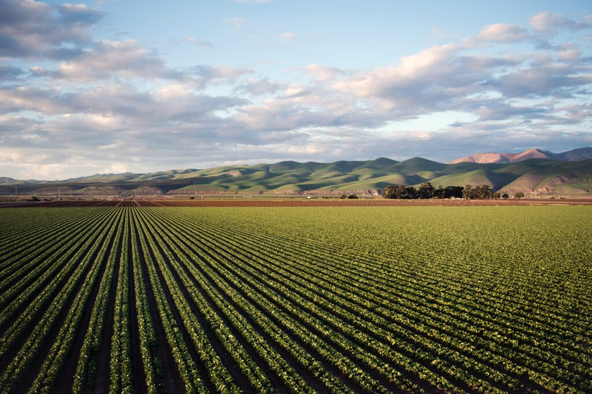

Welcome to Farm Management System
Explore the following categories:

Field Layout

Crop Information

Soil Information

Infrastructure and Resources

Harvest Data

Historical Data

Pest and Disease Monitoring

Topography

Compliance and Regulations